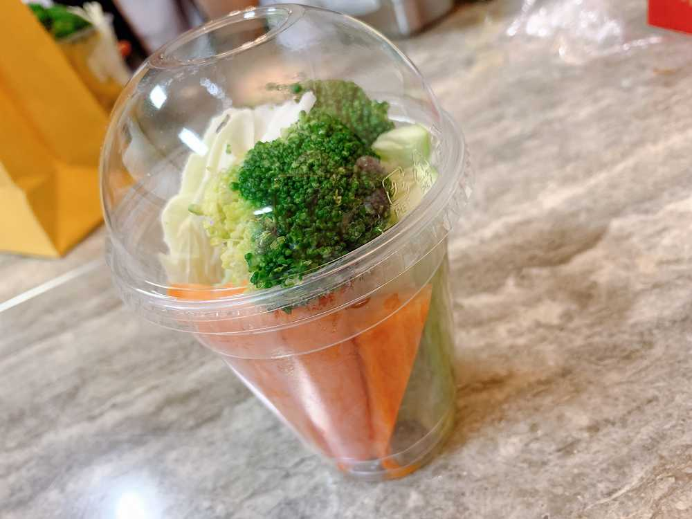

こんばんは🌇
ひいだよ🍓
今日は撮影が終わってから
渋谷のCDショップにサインを書いてきたよ😊
いつもは発売日に書きに行ってたけど
今回はコンサートがあって行けなかったので…
是非見に来てください〜😇
それにしても久しぶりに
こんなにも疲れてる😅
今日はずっと疲れてる感じが
身体から離れなくて、、
これは歳のせいか🤨
昨日頑張ったからか🤔笑
まだ今日はやること終わってないから
寝られないけど早めに寝たいなあ😢
そして今日の夜は
野菜スティックをウォニョンのママが
ひいにって作って持ってきてくれたんです😭
本当に優しい、、
野菜不足だったから嬉しかったなあ🥰
すごくおしゃれで
お店のものみたいでした😚
たくさん量もあったから
明日の朝も食べよっと😇
それじゃあまた！！
短くてごめんなさい🙇♀️
원영이엄마가 제게 야채컵을 만들어 주었어요!
최근 야채를 많이 못 먹어서 계속 먹고 싶었는데 오늘 먹을 수 있어서 기뻤어요!!
원영이엄마 고마워요!

ばいばーい👋
ひいまる🥟